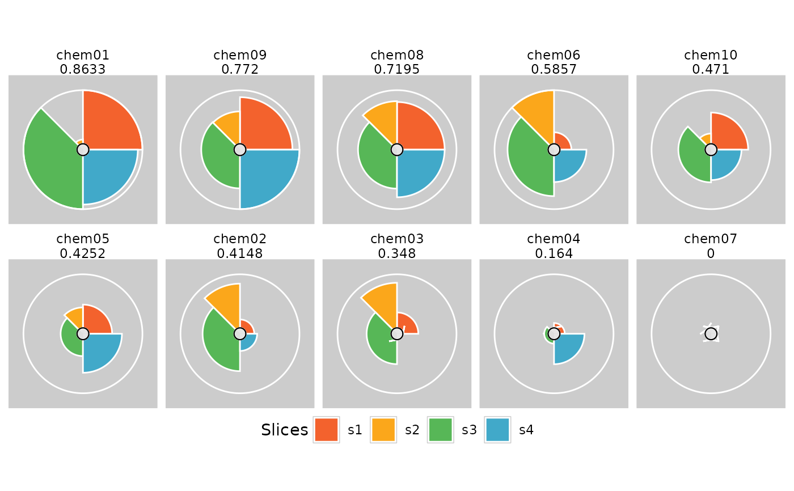
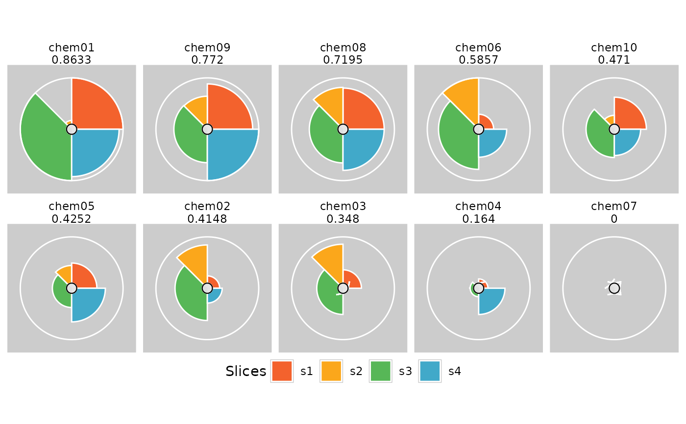

Plot TxpResult objects
Usage
# S4 method for class 'TxpResult,missing'
plot(
x,
package = c("grid", "ggplot2"),
fills = NULL,
showScore = TRUE,
gp = NULL,
vp = NULL,
name = NULL,
newpage = TRUE,
...,
ncol = NULL,
bgColor = "grey80",
borderColor = "white",
sliceBorderColor = "white",
sliceValueColor = NULL,
sliceLineColor = NULL,
showMissing = TRUE,
showCenter = TRUE
)
# S4 method for class 'TxpResult,numeric'
plot(
x,
y,
labels = NULL,
newpage = TRUE,
margins = c(4, 0, 1, 1),
name = NULL,
gp = NULL,
vp = NULL,
...
)Arguments
- x
TxpResult object
- package
Character scalar, choice of "grid" or "ggplot2" for plotting ToxPi profiles
- fills
Vector of colors to fill slices. Set to NULL to use default
- showScore
Logical scalar, overall score printed below the name when
TRUE- gp, vp, name
Passed to grid::frameGrob when creating the plotting area
- newpage
Logical scalar, grid::grid.newpage called prior to plotting when
TRUE- ...
Passed to pieGridGrob when plotting ToxPi and to pointsGrob when plotting ranks
- ncol
Number of columns for ggplot2 ToxPi profiles
- bgColor, borderColor, sliceBorderColor, sliceValueColor, sliceLineColor
Various color options when creating ggplot2 ToxPi profiles. Set to NULL for no color
- showMissing
Boolean for coloring data missingness in ggplot2 ToxPi profiles
- showCenter
Boolean for showing inner circle in ggplot2 ToxPi profiles. When set to False overrides showMissing
- y
Rank vector, i.e.
txpRanks(x)- labels
Integer vector, indices of
xto label in the rank plot- margins
Passed to grid::plotViewport; only affects the scatterplot region margins
Value
No return value when using grid; called for side effect (i.e. drawing in current graphics device). Will return ggplot2 object otherwise.
Details
It is strongly recommended to use a specific device (e.g., grDevices::png, grDevices::pdf) when creating rank plots. Using a GUI device will likely lead to inaccurate labeling, and any changes to the device size WILL lead to inaccurate labeling.
The plotting is built on the grid::grid-package, and can be adjusted or edited as such.
If the labels are running of the device, the top or bottom margins can be
increased with the margins parameter.
ToxPi profiles can also be plotted using the ggplot2 package.
Functions
plot(x = TxpResult, y = missing): Plot ToxPi diagramsplot(x = TxpResult, y = numeric): Plot ToxPi ranks
Examples
## Load example dataset & model; see ?TxpModel for building model objects
data(txp_example_input, package = "toxpiR")
data(txp_example_model, package = "toxpiR")
## Calculate scores for single model; returns TxpResult object
res <- txpCalculateScores(model = txp_example_model,
input = txp_example_input,
id.var = "name")
library(grid)
plot(res)
 plot(res[order(txpRanks(res))[1:4]])
plot(res[order(txpRanks(res))[1:4]])
 library(ggplot2)
plot(res, package = "gg")
library(ggplot2)
plot(res, package = "gg")
 plot(res[order(txpRanks(res))], package = "gg", ncol = 5) +
theme(legend.position = "bottom")

plot(res, txpRanks(res))
plot(res, txpRanks(res), pch = 16, size = unit(0.75, "char"))
## Will likely make inaccurate labels within a GUI, e.g. RStudio
## use png, pdf, etc. to get accurate labels
if (FALSE) { # \dontrun{
tmpPdf <- tempfile()
pdf(tmpPdf)
plot(res, txpRanks(res), labels = c(10, 4, 2), pch = 16)
dev.off()
} # }
plot(res[order(txpRanks(res))], package = "gg", ncol = 5) +
theme(legend.position = "bottom")

plot(res, txpRanks(res))
plot(res, txpRanks(res), pch = 16, size = unit(0.75, "char"))
## Will likely make inaccurate labels within a GUI, e.g. RStudio
## use png, pdf, etc. to get accurate labels
if (FALSE) { # \dontrun{
tmpPdf <- tempfile()
pdf(tmpPdf)
plot(res, txpRanks(res), labels = c(10, 4, 2), pch = 16)
dev.off()
} # }